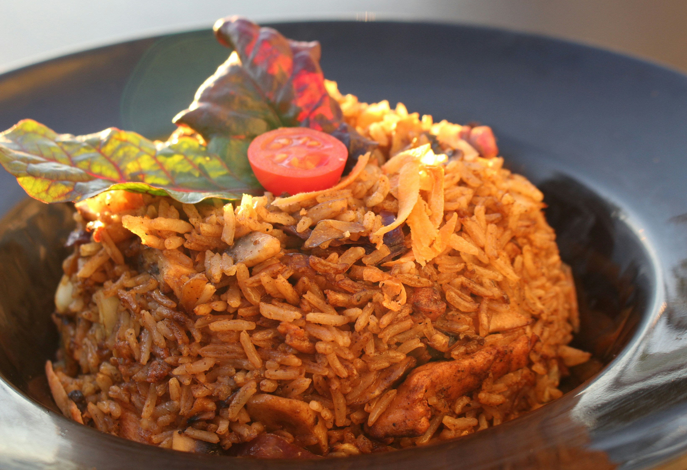

Home
Brown-Rice Recipe

Description
Brown rice is a whole grain rice with only the inedible outer hull removed.
This kind of rice sheds its outer hull or husk but the bran and germ layer remain on,
constituting the brown or tan colour of rice.
White rice is the same grain without the hull, the bran layer, and the cereal germ
Ingredients
- 1cup brown rice rinsed
- water 2cups or(1:2 ratio)
- salt 1teaspoon
- 1teaspoon butter or olive oil
- other seasoning if available
Steps
- Rinse the rice: Place 1 cup of brown rice in a fine-mesh
strainer and rinse it under cold running water until the water runs clear.
Drain well.
-
Combine ingredients: In a medium saucepan with a tight-fitting lid,
combine the rinsed rice, 2 cups of water,
and a pinch of salt (and a little oil/butter,
if using).
-
Bring to a boil: Bring the mixture to a boil over medium-high heat.
Watch the pot carefully to prevent it from boiling over
-
Simmer (covered): Once boiling, immediately reduce the heat to the lowest possible setting
to maintain a very gentle simmer.
Cover the pot tightly with the lid and cook for 40–45 minutes.
Do not lift the lid or stir during this time, as it lets the steam escape
-
Rest (off heat): Remove the pot from the heat and let it sit, still covered,
for 10 minutes. This essential step allows the residual steam to be absorbed,
resulting in an even texture.
-
Fluff and serve: Uncover the pot and fluff the rice gently with a fork before serving